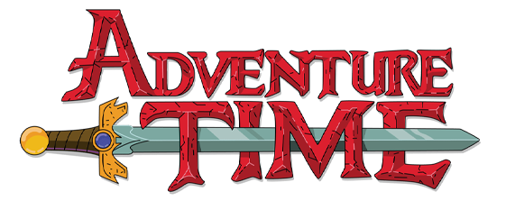

My Top 5 Favorite Cartoons
- Adventure Time

I believe Adventure Time has some of the most creative world building and even though things do get serious, it maintains a soft and playful tone throughout the series. There are dozens of characters to love and the story is also one of the most well-written. For animation fanatics, I would say this is a must watch!
You can stream this show on Max!
- Amphibia
Amphibia was a pleasant surprise when watching the first time. It goes from a silly concept of a girl in a frog world to having a crazy conflict between her 2 best friends while facing a war between amphibians. The art style seems simple but can get so mesmerizing when animated! This show has an amazing finale and makes so many pop culture references.
You can stream this show on Disney Plus!
- Steven Universe

This show can be an emotional rollercoaster at times but has such a pretty format in storytelling and design. There is foreshadowing dating back to the first episodes and I always stumble upon a new detail every rewatch. It also has a bunch of songs that continue to stick with me and a beautiful aesthetic.
You can stream this show on Max!
- Gravity Falls

Gravity Falls is a mystery based show where you can find foreshadowing and secret codes in almost every episode. It never fails to keep you guessing and wanting for more. It also has some of the funniest jokes that still continue to make me laugh!
You can stream this show on Disney Plus!
- The Owl House
This show had a strong beginning and a very cool concept about a human girl wanting to be a witch. The art style is my favorite out of these and the characters progress in very different ways than where they started. Unfortunately, this show had to face a very abrupt cut in it's final season and didn't end properly. So despite having a great concept, she's at the bottom for me.
You can stream this show on Disney Plus!
If you enjoy these shows... check out their creators!
Pendleton Ward
Creator of Adventure Time!

Learn more about Pendleton!Matt Braly
Creator of Amphibia!

Learn more about Matt!Rebecca Sugar
Creator of Steven Universe!
Learn more about Rebecca!Alex Hirsch
Creator of Gravity Falls!

Learn more about Alex!Dana Terrace
Creator of The Owl House!

Learn more about Dana!